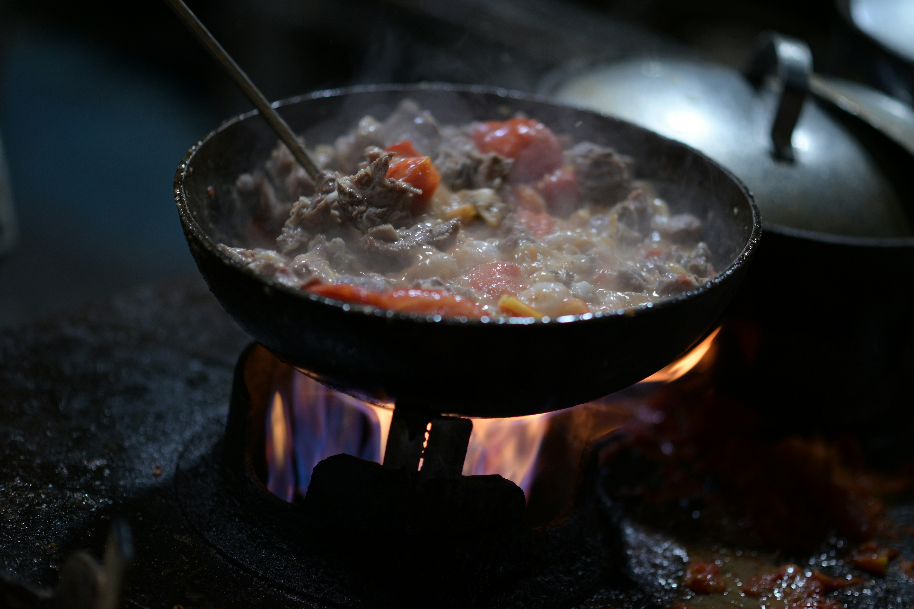

Home
Viking Stew

This rich and flavorful stew is made with slow-cooked meats, root
vegetables, and mix of spices. This recipe is perfect for the cold winter
nights.
Ingredients
- 1lb beef or venison
- 2 onions
- 3 carrots
- 2 parsnips
- 2 turnips
- 4 cups beef broth
- 2 tbsp butter
- 1 tsp salt
- 1 tsp pepper
- 1 tsp dried thyme
- 1 tsp dried sage
- 1 tsb dried rosemary
Instructions
-
In a large pot, add the meat and water/broth, bringing it to a boil.
- Reduce heat and let it simmer for 1 hour, skimming off any foam.
- Add chopped vegetables, and herbs.
- Simmer for another 45 minutes, stirring occasionally.
- Season with salt and pepper, then serve hot.